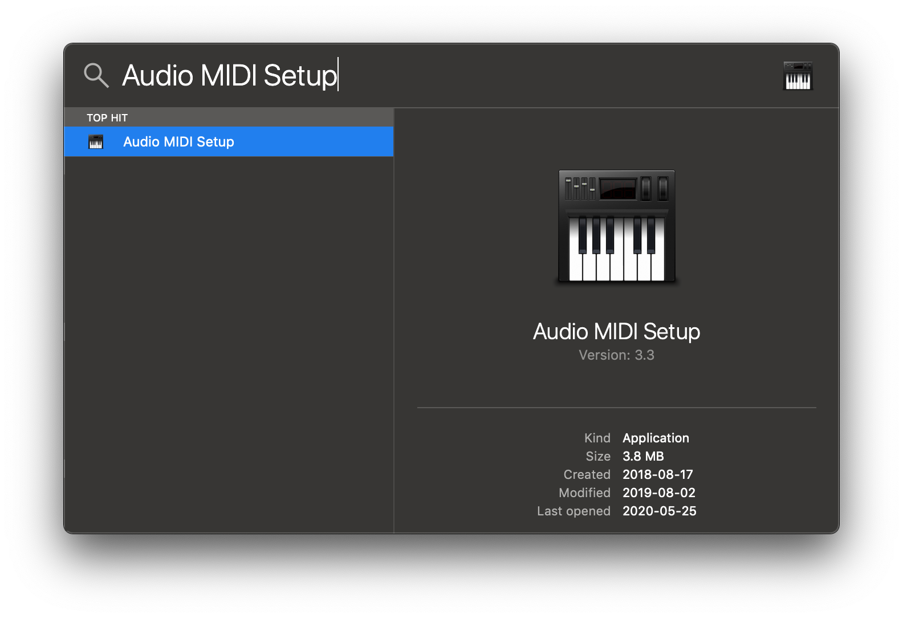
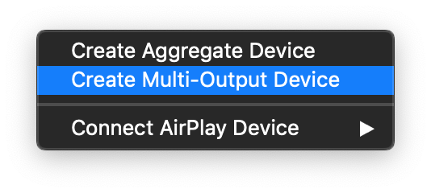
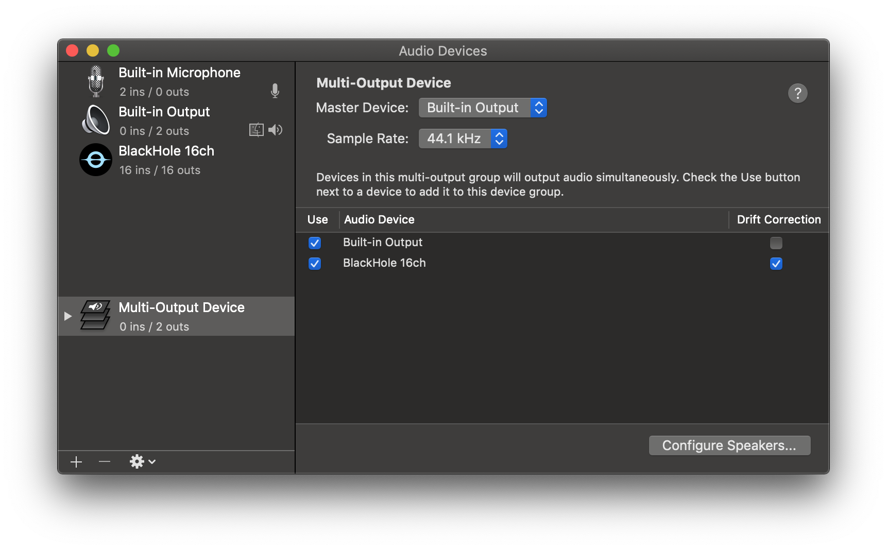

:orphan:
title: Registrazione Live¶
Per avviare una registrazione live:
Selezionare un task di registrazione, la lingua, la qualità e il microfono.
Cliccare su Record.
Nota: La trascrizione audio utilizzando il modello Whisper predefinito richiede molte risorse. Valutare l’utilizzo di Whisper.cpp. Supporta l’accelerazione GPU, se il modello si adatta alla memoria della GPU. Utilizzare modelli più piccoli per prestazioni in tempo reale.
Campo |
Opzione |
Default |
Descrizione |
|---|---|---|---|
Task |
«Transcribe», «Translate to English» |
«Transcribe» |
«Transcribe» converte l’audio in input in testo nella lingua selezionata, mentre «Translate to English» lo converte in testo in inglese. |
Language |
Consultare la documentazione di Whisper per l’elenco completo delle lingue supportate. |
«Detect Language» |
«Detect Language» tenterà di rilevare la lingua parlata nell’audio in base ai primi secondi. Tuttavia, si consiglia di selezionare una lingua (se nota) poiché in molti casi migliorerà la qualità della trascrizione. |
Microphone |
[Microfoni di sistema disponibili] |
[Microfono di sistema di default] |
Microfono per la registrazione dell’audio in ingresso. |
Preferenze avanzate¶
Silence threshold Imposta la soglia per l’elaborazione delle trascrizioni. Se il volume medio è inferiore a questa impostazione, la frase non verrà trascritta. Disponibile dalla 1.4.4. Line separator Contrassegno da aggiungere alle righe di trascrizione e traduzione. Il valore di default è due nuove righe (\n\n) che creano uno spazio vuoto tra le righe di traduzione o trascrizione. Per non avere righe vuote, utilizzare \n. Disponibile dalla versione 1.4.4.
Finestra di Presentazione¶
Dalla versione 1.4.2, Buzz dispone di una finestra di presentazione facile da usare, utilizzabile per mostrare trascrizioni in tempo reale durante eventi e presentazioni. Per aprirla, avviare la registrazione e appariranno nuove opzioni per la Presentation window.
Registrare l’audio riprodotto dal computer (macOS)¶
Per registrare l’audio riprodotto da un’applicazione sul proprio computer, si può installare un driver di loopback audio (un programma che consente di creare dispositivi audio virtuali). Il resto di questa guida utilizzerà BlackHole su Mac, ma si possono utilizzare altre alternative per il proprio sistema operativo (vedere LoopBeAudio, LoopBack e Virtual Audio Cable).
Installare BlackHole via Homebrew
brew install blackhole-2ch
Aprire Audio MIDI Setup da Spotlight o da Spotlight o da
/Applications/Utilities/Audio Midi Setup.app.
Cliccare sull’icona “+” nell’angolo in basso a sinistra e selezionare “Create Multi-Output Device”.

Aggiungere il proprio altoparlante predefinito e BlackHole al dispositivo multi-output.

Selezionare tale dispositivo multi-output come altoparlante (applicazione o a livello di sistema) per riprodurre l’audio in BlackHole.
Aprire Buzz, selezionare BlackHole come microfono e registrare come prima per visualizzare le trascrizioni dell’audio riprodotto tramite BlackHole.
Registrare l’audio riprodotto dal computer (Windows)¶
Per trascrivere l’audio di sistema, si deve configurare un dispositivo audio virtuale e collegare l’uscita dalle applicazioni da trascrivere a questo altoparlante virtuale. Dopodiché, è possibile selezionarlo come sorgente in Buzz.
Installare VB CABLE come dispositivo audio virtuale.
Configurare utilizzando le impostazioni audio di Windows. Click destro sull’icona dell’altoparlante nella barra delle applicazioni e selezionare «Open Sound settings». Nel menu a discesa «Choose your output device» selezionare «CABLE Input» per inviare tutti i suoni di sistema al dispositivo virtuale oppure utilizzare «Advanced sound options» per selezionare l’applicazione che trasmetterà i suoni a questo dispositivo.
Registrare l’audio riprodotto dal computer (Linux)¶
Come descritto su Ubuntu Wiki, su qualsiasi sistema Linux con audio Pulse è possibile reindirizzare l’audio dell’applicazione a un altoparlante virtuale. Dopodiché, lo si puà selezionare come sorgente in Buzz.
Passaggi generali:
Avviare l’applicazione che produrrà il suono da trascrivere e avviare la riproduzione. Ad esempio, avviare un video in un lettore multimediale.
Avviare Buzz e aprire la schermata di registrazione live, in modo da visualizzare le impostazioni.
Configurare il routing audio dall’applicazione da cui si desidera trascrivere il suono in Buzz nel
Recording tabdel «Volume Control» di PulseAudio (pavucontrol).